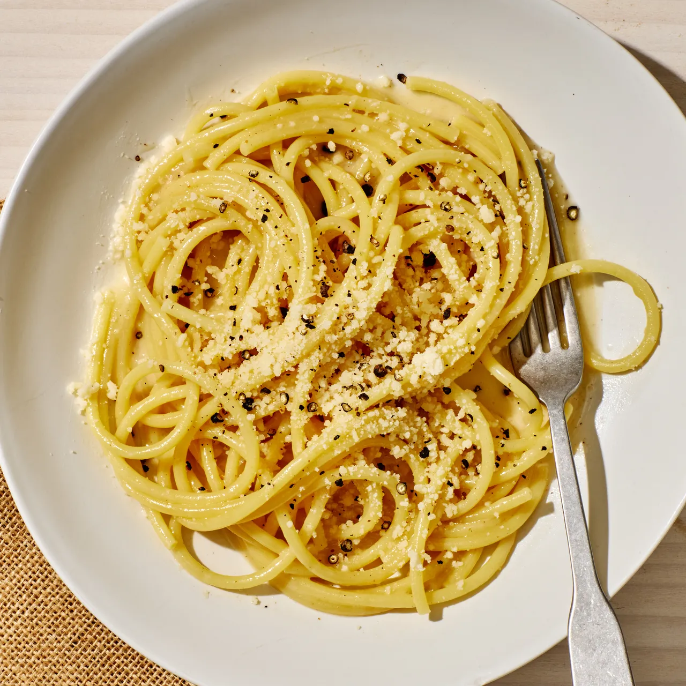

Cacio e Pepe

Simple Cacio e Pepe
Along with carbonara and amatriciana, cacio e pepe is one of Rome's essential pasta dishes, served at restaurants all over the Italian capital. Like many of the Eternal City's best dishes, a good cacio e pepe recipe is about simplicity. Classic versions call for just pasta, salted water, freshly ground pepper, and Pecorino Romano, a Roman sheep's milk cheese. Ours tosses a bit of Grana Padano or Parmesan into the mix for a more rounded cheese flavor that melds warmth, nuttiness, and sharpness. When combined properly, all the elements come together like sorcery into a lusciously cheesy dish with a creamy sauce.
Cacio e pepe is best served immediately, so be sure to set your table before you start cooking.
Ingredients
- 6 oz pasta
- 3 tablespoons of unsalted butter
- 1 tablespoon corasely ground blackpepper
- 1/3 cup finely grated Pecorino Romano cheese
- 1/4 cup finely grated Grana Padano or Parmesan cheese
Steps
- Bring 3 quarts water to a boil in a 5-qt. pot over high heat. Season boiling water with kosher salt; add 6 oz. pasta (such as egg tagliolini, bucatini, or spaghetti) and cook, stirring occasionally, until about 2 minutes before tender. Drain, reserving 3/4 cup pasta cooking water.
- Meanwhile, melt 2 Tbsp. unsalted butter, cubed, in a Dutch oven or other large pot or skillet over medium heat. Add 1 tsp. coarsely ground black pepper and cook, swirling pan, until toasted about 1 minute.
- Add 1/2 cup reserved pasta water to skillet and bring to a simmer. Add cooked pasta and remaining 1 Tbsp. unsalted butter, cubed. Reduce burner to low heat and add 3/4 cup finely grated Grana Padano or Parmesan cheese, stirring and tossing with tongs until melted. Remove pan from heat; add 1/3 cup finely grated Pecorino Romano cheese, stirring and tossing until cheese melts, sauce coats the pasta, and pasta is al dente. (Add more pasta water if sauce seems dry.) Transfer pasta to warm bowls, garnish with more black pepper, and serve.